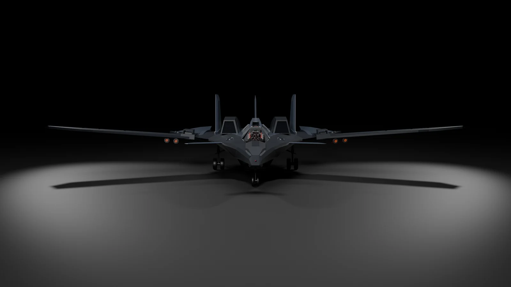
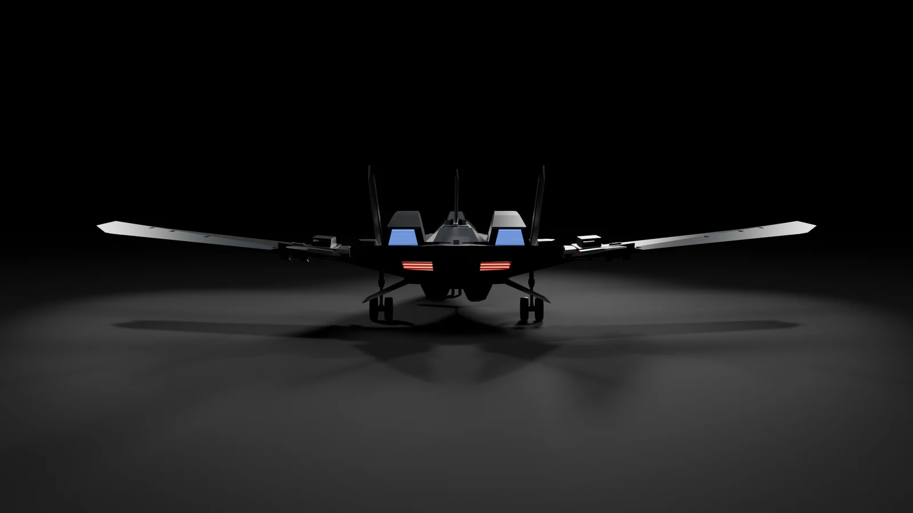
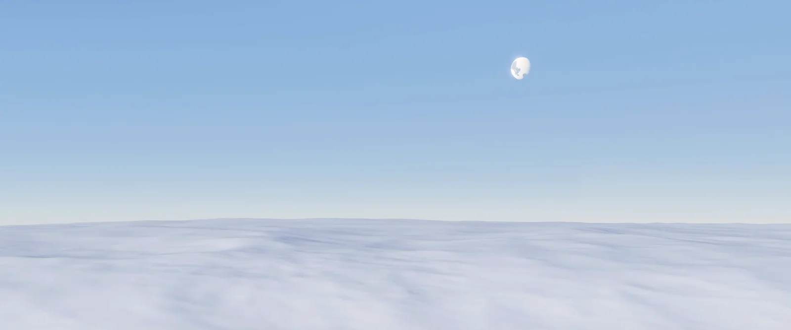
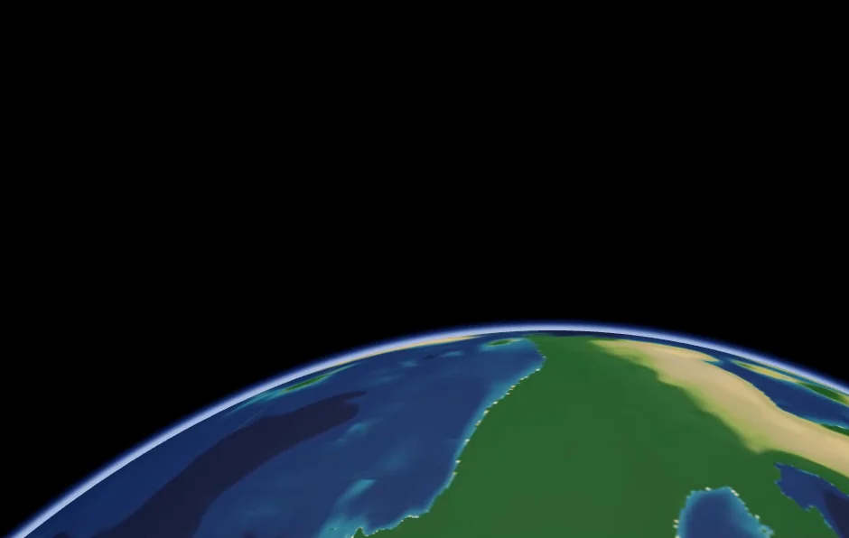
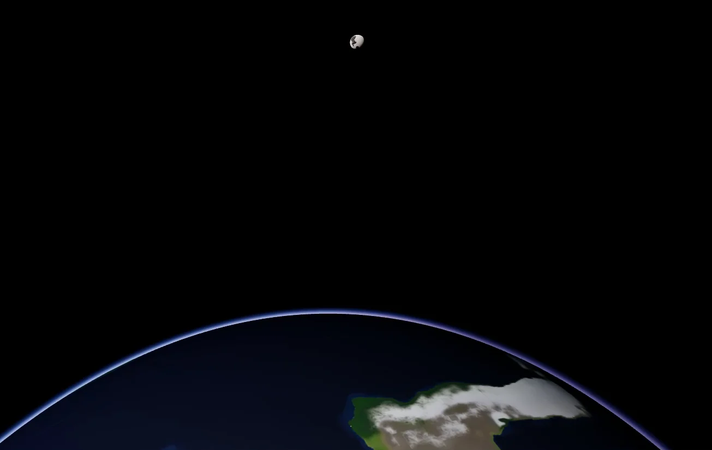
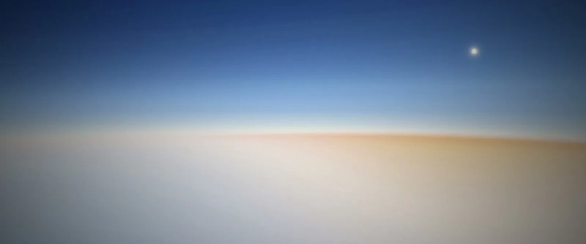

Something struck both the planet and the moon colony. Two people who were never meant to meet are drawn together, with an intertwined history.
It's a story game for one player, maybe two playing together, set on a planet and its moon at full size. Everything below is running in Roblox right now, and all of it is still being worked on.
THE WORLD
What's working so far.
-
3,389.5 kmthe planet's radius
A planet the size of Mars
It's round, and it's full size. You can fly down from orbit, land wherever you like and get out and walk around.
-
87,000 kmto the moon
A moon you can fly to
The moon is 87,000 km out. The quantum drive gets you there in about six seconds. Gravity on the moon is about a third of the planet's, and you can see the planet hanging in its sky.
-
2 hone day
A sky worked out from the air
A day lasts two hours. The colour of the sky, the sunsets and the haze are calculated from the atmosphere where you are, so the sky gets darker the higher you climb.
-
1 systemfor every ship
Ships that fly on their thrusters
Every ship has its own weight and its own thrusters, and gravity pulls on it like anything else. A heavy ship with weak engines flies like one.
-
custombodies and animation
Characters built from scratch
They don't use Roblox's standard character. Their bodies and animation are custom made, and each foot is placed on whatever is under it, so stairs and slopes look right.
THE SHIPS
One of several ships being built.


A fighter with long straight wings, twin canted tails and two engines. Capable of space travel. Rendered from its in-game model.
FROM THE WORKSHOP
Early screenshots and tests.




SUPPORT
Everything I post is free and will stay free. If you want to support the project, there's a Patreon. Paying doesn't unlock anything. It just helps me keep working on it.
Support on PatreonProject Chroma is a working title. The portraits are renders of the characters' 3D models. In-engine shots are captured live in Roblox.
No release date yet. This is a one-person project.